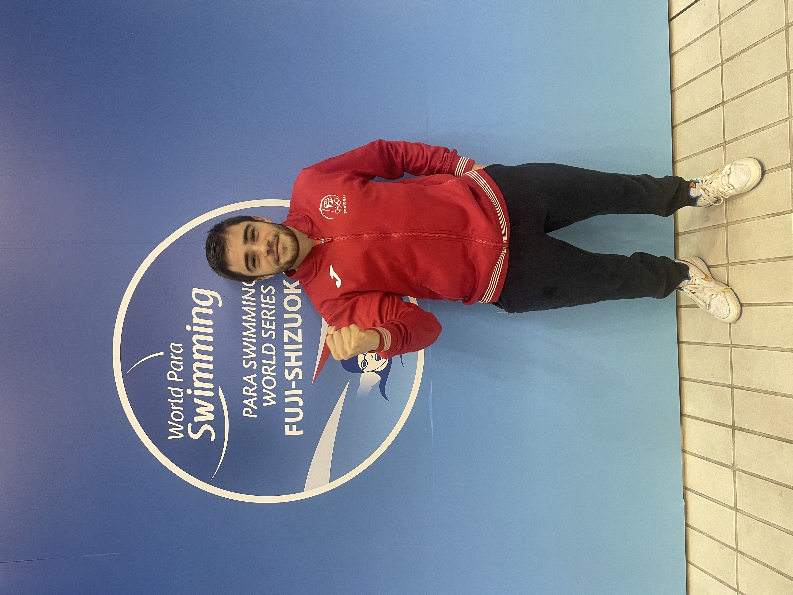

Palmarés
2025

46º lugar 50L World Para Swimming Series Fuji-Shizuoka
76º lugar 100L World Para Swimming Series Fuji-Shizuoka
67º lugar 100B World Para Swimming Series Fuji-Shizuoka
56º lugar 100C World Para Swimming Series Fuji-Shizuoka
1xüèÖ 50L | 100B Campeonato Nacional Universitário PL
2xü•â 100B | 50L XI Torneio de Nata√ß√£o Adaptada Cidade do Porto
2024
1xüèÖ 100B Torneio Natal Coimbra
1xü•à 50L Torneio Natal Coimbra
3xü•à 50L | 100B | 100C Campeonato Nacional Inverno
1xü•â 100L Campeonato Nacional Inverno
üèÖ Vencedor "Atleta do Ano Desporto Adaptado Santo Tirso"
1xüèÖ 100B | 100C Campeonato Nacional Universitário PC
2023

üèÜ 400E Recorde Nacional S9
4xüèÖ 50L | 100L | 400L | 100C Campeonato Nacional Inverno
üèÖ Nomea√ß√£o "Atleta do Ano Desporto Adaptado Santo Tirso"
üèÜ Vice-Campe√µes Nacionais por equipas masculinas
2xüèÖ 400L | 100C II Trof√©u Baptista Pereira
1xü•à 50L II Trof√©u Baptista Pereira
1xü•â 100L II Trof√©u Baptista Pereira
üèÜ Vencedores II Trof√©u Baptista Pereira
3xüèÖ 100C | 100L | 400L Campeonato Regional Centro e Norte de Portugal
2022

2xüèÖ 50L | 400L Campeonato Nacional
üèÜ Bi-Campe√µes Nacionais por equipas masculinas
üèÜ Vencedores I Trof√©u Baptista Pereira
2xü•à 100L | 100C Campeonato Nacional
2021

üèÜCampe√µes Nacionais por equipas masculinas